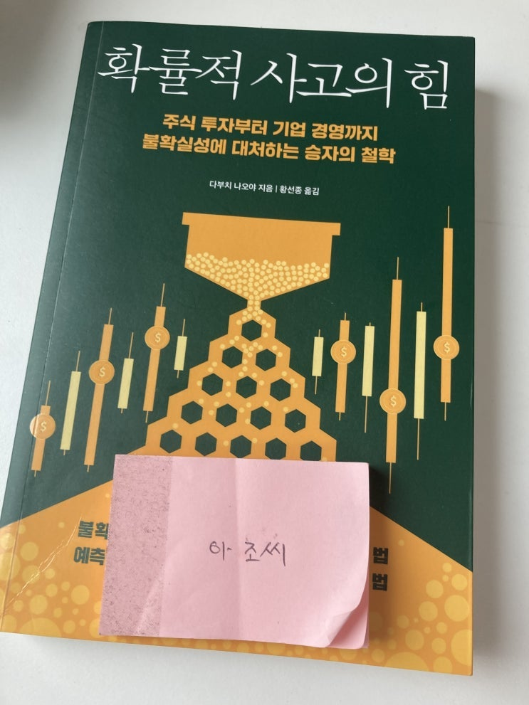

디카프리오 형님이 돈의 심리학과 함께 추천해주신 책.
내용이 짧고 별로 신선한게 없어서 쭉쭉 빠르게 하루만에 대충 읽었다. (후반 1/3 정도는 큰 제목만 보고 넘긴듯) 느낌은 나심 탈레브의 '블랙 스완'의 쉬운 버전. 사람들이 좀 더 접근하기 쉽도록 역사 이야기 (일본 전국시대, 중국 고사) 를 차용했고, 직장과 삶에서 적용해볼 수 있는 확률적 사고에 대해서 비확률적 사고와 대비하여 설명하는 내용들이 있다.
이 비확률적 사고는 나심 탈레브가 말하던 '플라톤적 사고' 와 비슷한데, 확률적으로 큰 연관 없지만 왠지 그럴 듯하게 설명되는 것들을 사람들이 믿고 따른다는 것이다.
맨날 회사에서 하는일이 이건데 아이구 확률적 사고에 대해서 개념이 없으신 분들께는 가볍게 읽는 용도로 한 번 쯤 볼만한 책이지만 '블랙 스완'을 읽어본 분들께는 추천하지 않는다.
끝!